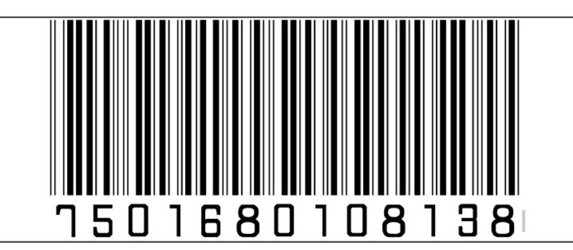
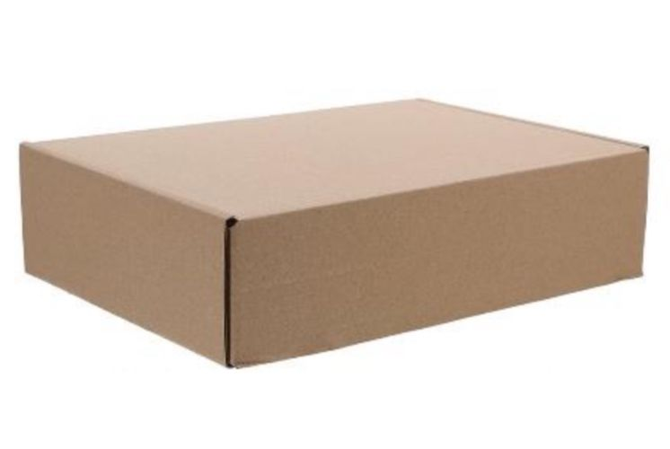

Nombre, Significado y Objetivos
Significado del Nombre de la Empresa
BIO: Hace referencia a lo biológico y natural. Esto comunica que nuestro producto está hecho a base de ingredientes naturales.
BOCADO: Significa una porción pequeña de comida, lo que sugiere algo delicioso y fácil de comer.
Nuestra motivación fue crear un nombre y un producto que reflejara la idea de algo natural, sencillo, práctico y delicioso, capaz de sustituir a los plásticos de un solo uso con una alternativa amigable con el medio ambiente.
Significado del Nombre del Producto
FRUTA: Es la base, indicando claramente que el producto tiene que ver con frutas.
UTENSILIOS: Se refiere a herramientas o instrumentos de cocina.
Al unirlos, sugiere de manera lúdica que el producto es un “utensilio” hecho a base de frutas.
Objetivo General
• Desarrollar cubiertos comestibles elaborados a base de frutas y semillas que combinen funcionalidad, sabor y sostenibilidad, ofreciendo una alternativa innovadora a los cubiertos plásticos de un solo uso.
Objetivos Específicos
- Investigar y seleccionar frutasy semillas que aporten resistenci, sabor y valor nutricional.
- Diseñar un proceso eficiente que garantice la durabilidad y seguridad alimentaria de los frutencilios.
- Crear un empaque biodegradble y atractivo que proteja el producto y refuerce la identidad ecologica de la marca.
- Validar la aceptacion del producto mediante pruebas de consumo en distintos contextos
- Promover el uso de frutencilios como una alternativa practica y sustentable para reducir la contaminacion por platicos.
Sobre Nosotros.
Misión
Desarrollar y producir cubiertos comestibles elaborados con frutas y semillas, que no solo sean prácticos y nutritivos, sino que también reduzcan la huella de carbono. Nuestro compromiso es ofrecer alternativas sustentables que promuevan un cambio positivo en los hábitos de consumo y el cuidado del planeta.
Visión
Ser la empresa líder en soluciones de utensilios ecológicos y prácticos para el consumo de frutas y alimentos, reconocida por su compromiso con la sostenibilidad, la innovación y el bienestar de las personas, impactando positivamente a comunidades y al planeta.
Valores
1.Sostenibilidad: Promovemos productos amigables con el medio ambiente y procesos responsables.
2.Innovación: Buscamos constantemente nuevas formas de mejorar la experiencia de nuestros clientes.
3.Calidad: Ofrecemos utensilios duraderos, seguros y funcionales.
4.Salud: Fomentamos hábitos alimenticios saludables mediante nuestros productos.
5.Compromiso: Actuamos con responsabilidad social y respeto hacia nuestros clientes, colaboradores y la naturaleza.
6.Creatividad: Inspiramos soluciones únicas que combinan utilidad y diseño atractivo.
7. Trabajo en equipo: Creemos que la colaboración fortalece nuestras ideas, nos impulsa a lograr metas en común y alcanzar mejores resultados.
Nuestro Producto
Nuestro producto es un cubierto biodegradable y comestible elaborado a base de harina, fruta (como manzana), amaranto y cáscara de plátano, ingredientes 100% naturales. Está diseñado como una alternativa sostenible a los cubiertos de plástico, reduciendo la contaminación y ofreciendo a los consumidores una opción práctica, resistente y amigable con el medio ambiente. Cada cuchara y tenedor cuenta con una textura firme, obtenida mediante un proceso de horneado que permite que el cubierto mantenga su forma al usarse para alimentos ligeros o semi–líquidos. Su combinación de ingredientes naturales aporta un ligero aroma y sabor neutro-dulce, lo que lo vuelve agradable y seguro para consumir o desechar sin impacto negativo. Los productos se empacan en cajas biodegradables, que protegen el cubierto de la humedad y prolongan su vida útil sin usar plásticos.
Procedimiento y Pruebas
-
Preparación de los ingredientes
- Harina: actúa como base y estructura.
- Fruta (manzana): aporta humedad y cohesión; se utiliza picada o hecha puré.
- Amaranto: mejora la textura y firmeza final del producto.
- Cáscara de plátano: se lava, se desinfecta y se muele hasta obtener un polvo fino.
- Agua, miel y limón: ayudan a unir la mezcla y mejorar su durabilidad.
-
Mezcla
Todos los ingredientes secos se combinan primero (harina, amaranto, cáscara de plátano). Luego se agregan la fruta y los líquidos hasta obtener una masa uniforme, ligeramente pegajosa pero moldeable.
-
Formación del cubierto
La masa se coloca sobre moldes (o se forma manualmente, presionando con cuidado) para obtener la forma de cuchara o tenedor. Es importante que la masa quede compacta para evitar grietas.
-
Horneado
Los cubiertos se hornean a temperatura moderada hasta que se endurezcan por completo. Este proceso les da firmeza y ayuda a eliminar la humedad interna, aumentando su resistencia.
-
Enfriado y secado
Una vez horneados, se dejan al aire libre durante varias horas para asegurar que pierdan cualquier humedad restante. Este paso es esencial para su durabilidad.
-
Empaque
Los cubiertos ya secos se colocan en cajas biodegradables herméticas, evitando que absorban humedad del ambiente. El empaque también incluye una etiqueta con información del producto, fecha aproximada de elaboración y vida útil estimada.
Ficha Técnica del Producto
| Nombre del producto | FRUTENSILIOS |
|---|---|
| Cantidad del producto | Paquete de 12 con 6 cucharas y 6 tenedores |
| Domicilio del fabricante | Fracción la Coyoleta del Ejido, Av. Nopaltepec, Av. San Antonio s/n, Industrial Cuamatla, 54748 Cuautitlán Izcalli, Méx. |
| País de origen | MÉXICO |
| Ingredientes |
|
| Advertencias y precauciones |
|
| Instrucciones de uso |
|
| Fecha de caducidad | De 4 a 6 semanas |
| Condiciones de almacenamiento |
|
Código de Barras
Empaque del Producto
Nuestro Equipo
Gustavo Garcia Garcia.
Direccion General
Emiliano Sanchez Lazaro
Finanzas. Compras/Adquisicion.
Jessica Denise Mejia Bustos
Recursos Humanos.
Leonardo Salazar Barco.
Produccion.
Sebasstian Campos Morales
Marketing.